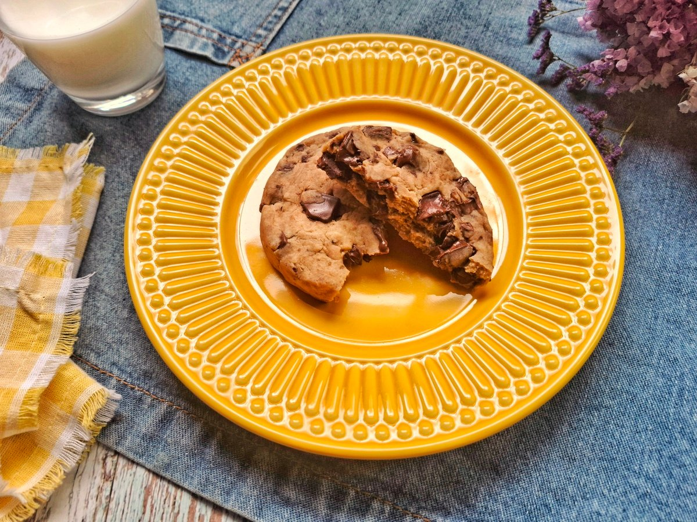
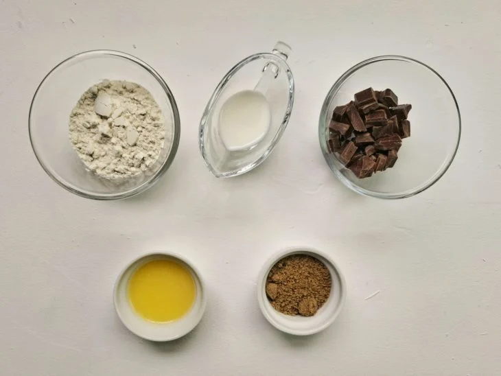
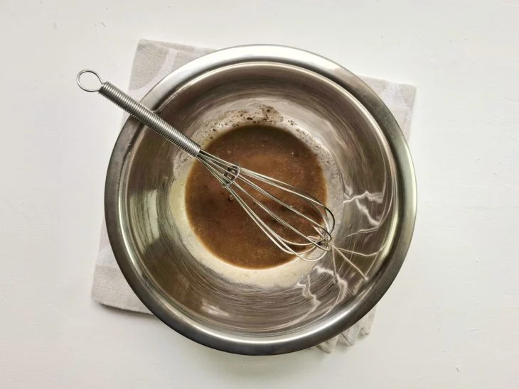
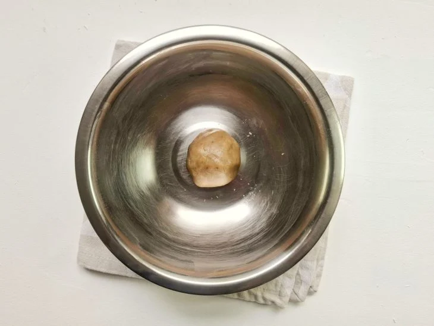
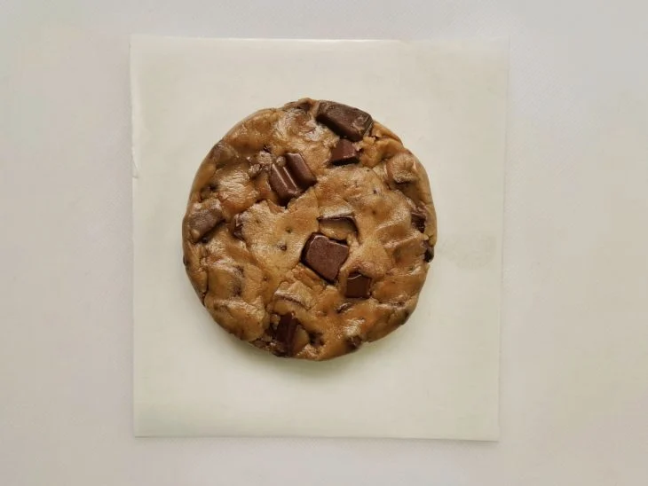
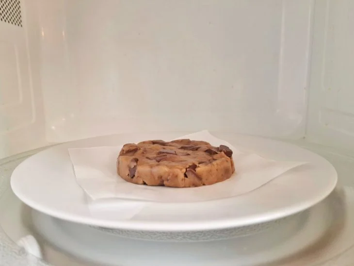
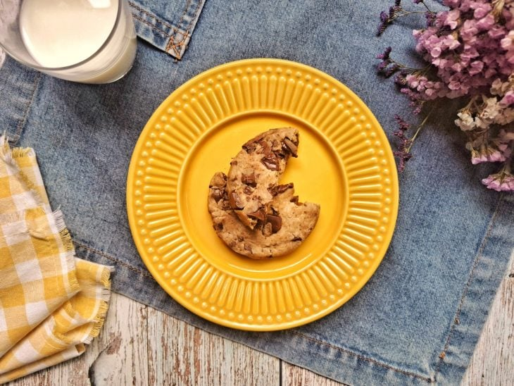

Cookie de micro-ondas

Ingredientes
- 1 colher de sopa de açúcar mascavo (13 gramas)
- 1/2 colher de sopa de leite (8 ml)
- 1 colher de sopa de manteiga derretida (15 ml)
- 4 colheres de sopa de farinha de trigo (35 gramas)
- 30 gramas de chocolate picado ou em gotas
Modo de preparo
- 
Veja os ingredientes para fazer o cookie de micro-ondas. Se não tiver açúcar mascavo, pode usar o cristal. Preferencialmente, use manteiga sem sal;
- 
Em uma tigela pequena, junte o açúcar, o leite e a manteiga. Misture bem com um fouet por cerca de 30 segundos, até ficar homogêneo;
- 
Adicione a farinha de trigo e, com as mãos higienizadas, misture por 1 minuto, ou até obter uma massa homogênea (bem lisinha);
- 
Quando a massa estiver lisa, acrescente o chocolate picado, ou em gotas, e misture para incorporar. Modele o cookie em cima do papel-manteiga, formando um disco de aproximadamente 10 cm;
- 
Forre um prato com papel-manteiga e coloque o cookie em cima. Leve ao micro-ondas por cerca de 1 minuto (o tempo pode variar de acordo com a potência de seu micro-ondas);
- 
Retire o cookie do micro-ondas e espere esfriar até a casquinha ficar crocante. Pode preparar um copo de leite como acompanhamento.